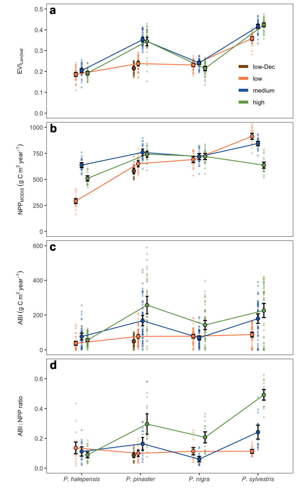

{kind=link}
Code
library(tidyverse)
library(emmeans)
library(multcompView)
library(kableExtra)
source("../scripts/aux.R")
abi <- read_csv("../data/abi.csv") |>
mutate(se = NA, sd = NA, variable = "abi") |>
rename(mean = abi)
npp <- read_csv("../data/npp_modis.csv") |>
rename(mean = npp) |>
mutate(se = NA, sd = NA, variable = "npp") |>
dplyr::select(year, sp_code, elev_code, sp_elev, mean, sd, se, variable)
evi_landsat <- read_csv("../data/iv_landsat.csv") |>
filter(iv == "evi") |>
dplyr::select(year, sp_code, elev_code, mean, sd, se) |>
mutate(variable = "evi_landsat")
ratio <- read_csv("../data/ratio_abinpp.csv") |>
dplyr::select(year, sp_code, elev_code, sp_elev, mean = ratio) |>
mutate(se = NA, sd = NA, variable = "ratio")
df <- bind_rows(
abi, evi_landsat, npp, ratio) |>
mutate(elev_code = fct_relevel(elev_code, "low-Dec","low", "medium", "high")) |>
mutate(Specie = paste0("P. ", sp_code)) |>
rename(mean_y = mean, y_variable = variable)
## Summary statistics
# Function to generate comparisons and perform letter-based grouping
generate_comparisons <- function(model, sp_code = NULL, elev_code = NULL, alpha = 0.001) {
emm <- emmeans(model, pairwise ~ sp_code * elev_code, adjust = "bonferroni", alpha = alpha,
at = list(sp_code = sp_code, elev_code = elev_code))
cld_df <- multcomp::cld(emm, Letters = letters, level = 1 - alpha)
p_values <- summary(emm, infer = TRUE)$contrasts$'p.value'
result_df <- cld_df |>
mutate(p_value = p_values[match(.group, cld_df$.group)])
return(result_df)
}
df_avg <- df |>
group_by(y_variable, sp_code, elev_code, sp_elev) |>
summarise(mean = mean(mean_y),
sd = sd(mean_y),
se = sd/sqrt(length(mean_y))) |> ungroup()
variable <- "evi_landsat"
x <- df |> filter(y_variable == variable)
lm_evi <- lm(mean_y ~ sp_code*elev_code, data = x)
means_letters_lm_evi <- bind_rows(
generate_comparisons(lm_evi, sp_code = "halepensis", elev_code = c("low", "medium", "high")),
generate_comparisons(lm_evi, sp_code = "pinaster", elev_code = c("low", "low-Dec", "medium", "high")),
generate_comparisons(lm_evi, sp_code = "nigra", elev_code = c("low", "medium", "high")),
generate_comparisons(lm_evi, sp_code = "sylvestris", elev_code = c("low", "medium", "high"))
) |>
mutate(y_variable = variable)
variable <- "evi_landsat"
x <- df |> filter(y_variable == variable)
lm_evi <- lm(mean_y ~ sp_code*elev_code, data = x)
means_letters_lm_evi <- bind_rows(
generate_comparisons(lm_evi, sp_code = "halepensis", elev_code = c("low", "medium", "high")),
generate_comparisons(lm_evi, sp_code = "pinaster", elev_code = c("low", "low-Dec", "medium", "high")),
generate_comparisons(lm_evi, sp_code = "nigra", elev_code = c("low", "medium", "high")),
generate_comparisons(lm_evi, sp_code = "sylvestris", elev_code = c("low", "medium", "high"))
) |>
mutate(y_variable = variable)
variable <- "abi"
x <- df |> filter(y_variable == variable)
lm_abi <- lm(mean_y ~ sp_code*elev_code, data = x)
means_letters_lm_abi <- bind_rows(
generate_comparisons(lm_abi, sp_code = "halepensis", elev_code = c("low", "medium", "high")),
generate_comparisons(lm_abi, sp_code = "pinaster", elev_code = c("low", "low-Dec", "medium", "high")),
generate_comparisons(lm_abi, sp_code = "nigra", elev_code = c("low", "medium", "high")),
generate_comparisons(lm_abi, sp_code = "sylvestris", elev_code = c("low", "medium", "high"))
) |>
mutate(y_variable = variable)
variable <- "npp"
x <- df |> filter(y_variable == variable)
lm_npp <- lm(mean_y ~ sp_code*elev_code, data = x)
means_letters_lm_npp <- bind_rows(
generate_comparisons(lm_npp, sp_code = "halepensis", elev_code = c("low", "medium", "high")),
generate_comparisons(lm_npp, sp_code = "pinaster", elev_code = c("low", "low-Dec", "medium", "high")),
generate_comparisons(lm_npp, sp_code = "nigra", elev_code = c("low", "medium", "high")),
generate_comparisons(lm_npp, sp_code = "sylvestris", elev_code = c("low", "medium", "high"))
) |>
mutate(y_variable = variable)
variable <- "ratio"
x <- df |> filter(y_variable == variable)
lm_ratio <- lm(mean_y ~ sp_code*elev_code, data = x)
means_letters_lm_ratio <- bind_rows(
generate_comparisons(lm_ratio, sp_code = "halepensis", elev_code = c("low", "medium", "high")),
generate_comparisons(lm_ratio, sp_code = "pinaster", elev_code = c("low", "low-Dec", "medium", "high")),
generate_comparisons(lm_ratio, sp_code = "nigra", elev_code = c("low", "medium", "high")),
generate_comparisons(lm_ratio, sp_code = "sylvestris", elev_code = c("low", "medium", "high"))
) |>
mutate(y_variable = variable)
df_letters <- bind_rows(means_letters_lm_abi, means_letters_lm_evi, means_letters_lm_npp, means_letters_lm_ratio) |> ungroup()
out <- df_avg |> inner_join(df_letters) |>
mutate(pvalue = ifelse(p_value < 0.0001, "<0.0001", round(p_value, 3)))
## Figure
df_plot <- df |>
mutate(sp_code = fct_relevel(sp_code, "halepensis","pinaster", "nigra", "sylvestris")) |>
mutate(variable2 = case_when(
y_variable == "abi" ~ "ABI~(g~C~m^2~year^{-1})",
y_variable == "npp" ~ "NPP[MODIS]~(g~C~m^2~year^{-1})",
y_variable == "evi_landsat" ~ "EVI[Landsat]",
y_variable == "ratio" ~ "ABI:NPP~ratio"
)) |>
mutate(Species = paste0("P. ", sp_code)) |>
ungroup()
out_plot <- out |>
mutate(sp_code = fct_relevel(sp_code, "halepensis","pinaster", "nigra", "sylvestris")) |>
mutate(variable2 = case_when(
y_variable == "abi" ~ "ABI~(g~C~m^2~year^{-1})",
y_variable == "npp" ~ "NPP[MODIS]~(g~C~m^2~year^{-1})",
y_variable == "evi_landsat" ~ "EVI[Landsat]",
y_variable == "ratio" ~ "ABI:NPP~ratio"
)) |>
ungroup()
y_scales <- list(
scale_y_continuous(limits = c(0, 0.5)),
scale_y_continuous(limits = c(0,1000)),
scale_y_continuous(limits = c(0, 600)),
scale_y_continuous(limits = c(0,.7))
)
letras_indicativo_plot <- data.frame(
variable2 = c("EVI[Landsat]",
"NPP[MODIS]~(g~C~m^2~year^{-1})",
"ABI~(g~C~m^2~year^{-1})",
"ABI:NPP~ratio"),
label = c("a", "b", "c", "d"),
x = c(-Inf, -Inf, -Inf, -Inf),
y = c(Inf, Inf, Inf, Inf) # Inf to put at upper
)
custom_position = position_dodge(width = 0.3)
out_plot2 <- out_plot |>
inner_join(letras_indicativo_plot, by="variable2") |>
mutate(Species = paste0("P. ", sp_code)) |>
mutate(Species = fct_relevel(Species, "P. halepensis","P. pinaster", "P. nigra", "P. sylvestris"))
colours_elev <- c("low-Dec" = "#8c510a",
"low" ="#fc8d59",
"medium" = "#2166ac",
"high" = "#72A55A")
plot_avg_eviabinpp <- ggplot(data = out_plot2,
aes(y = mean, x = Species, group = elev_code, colour = elev_code)) +
geom_jitter(data = df_plot,
aes(y = mean_y, x = Species,
group = elev_code, colour = elev_code),
alpha = 0.3, size = .75, stroke = 0.5,
position = custom_position, show.legend = FALSE) +
geom_line(position = custom_position, size = .6) +
geom_errorbar(aes(ymin=mean-1.96*se, ymax=mean+1.96*se),
colour = "black", width=.2, lwd = .7, position = custom_position) +
geom_point(size = 2.2, position = custom_position,
aes(fill = elev_code, group = elev_code),
shape = 21, colour = "black", stroke = 0.5, show.legend = FALSE) +
facet_wrap(~factor(variable2, c("EVI[Landsat]",
"NPP[MODIS]~(g~C~m^2~year^{-1})",
"ABI~(g~C~m^2~year^{-1})",
"ABI:NPP~ratio")),
scales = "free_y",
labeller = label_parsed,
strip.position = "left",
ncol = 1) +
theme_bw() +
theme(
panel.grid = element_blank(),
strip.background = element_blank(),
strip.placement = "outside",
legend.position = c(0.85, 0.84),
legend.background = element_blank(),
axis.text.x = element_text(face = "italic"),
strip.text = element_text(face = "bold", size = 9)
) +
scale_colour_manual(values = colours_elev, name = "", guide = guide_legend(override.aes = list(linewidth = 2))) +
scale_fill_manual(values = colours_elev, name = "") +
xlab("") +
ylab("") +
ggh4x::facetted_pos_scales(y = y_scales) +
geom_text(aes(label = label, x = x, y = y),
vjust = 1.2, hjust = -.5, size = 6,
fontface = "bold", inherit.aes = FALSE)
# custom scales
plot_avg_eviabinpp 